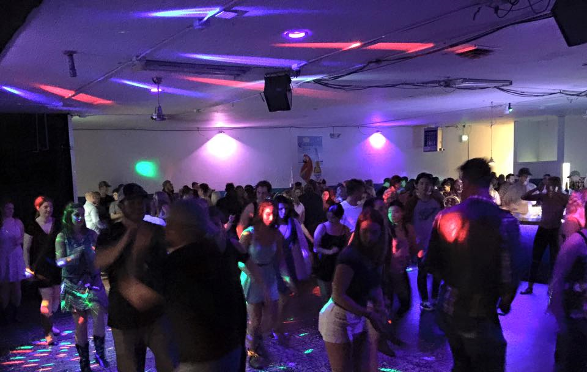
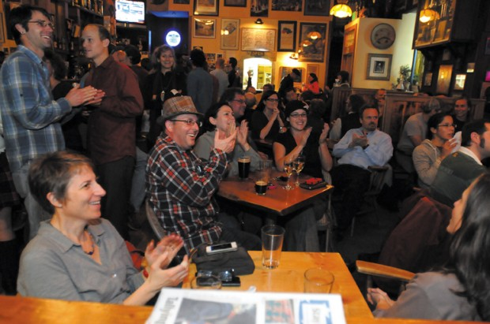

Unique Bars in Corvallis
Benjamin Wheeler, wheelebe@oregonstate.edu Oregon State University
A bar (also known as a saloon or a tavern or sometimes a pub or club, referring to the actual establishment, as in pub bar or club bar etc.) is a retail business establishment that serves alcoholic beverages, such as beer, wine, liquor, cocktails, and other beverages such as mineral water and soft drinks and often sell snack foods such as crisps (potato chips) or peanuts, for consumption on premises.[1] Some types of bars, such as pubs, may also serve food from a restaurant menu. The term "bar" also refers to the countertop and area where drinks are served. Bars provide stools or chairs that are placed at tables or counters for their patrons. Bars that offer entertainment or live music are often referred to as music bars, live venues, or nightclubs. Types of bars range from inexpensive dive bars[2] to elegant places of entertainment often accompanying restaurants for dining.

Many bars have a discount period, designated a "happy hour" to encourage off-peak-time patronage. Bars that fill to capacity sometimes implement a cover charge or a minimum drink purchase requirement during their peak hours. Bars may have bouncers to ensure patrons are of legal age, to eject drunk or belligerent patrons, and to collect cover charges. Such bars often feature entertainment, which may be a live band, vocalist, comedian, or disc jockey playing recorded music. The term "bar" is derived from the specialized counter on which drinks are served. Patrons may sit or stand at the bar and be served by the bartender. Depending on the size of a bar and its approach, alcohol may be served at the bar by bartenders, at tables by servers, or by a combination of the two. The "back bar" is a set of shelves of glasses and bottles behind that counter. In some establishments, the back bar is elaborately decorated with woodwork, etched glass, mirrors, and lights.
Corvallis
Corvallis is a city in central western Oregon, United States. It is the county seat of Benton County and the principal city of the Corvallis, Oregon Metropolitan Statistical Area, which encompasses all of Benton County. As of the 2010 United States Census, the population was 54,462. Its population was estimated by the Portland Research Center to be 55,298 in 2013.Corvallis is the location of Oregon State University, a large Hewlett-Packard research campus, and Good Samaritan Regional Medical Center.
In October 1845, Joseph C. Avery arrived in Oregon from the east. Avery took out a land claim at the mouth of Marys River where it flows into the Willamette River and in June 1846 took up residence there in a log cabin hastily constructed to hold what seemed a potentially lucrative claim. Avery's primitive 1846 dwelling was the first home within the boundaries of today's Corvallis and his land claim included the southern section of the contemporary city.
Corvallis is the largest principal city of the Albany-Corvallis-Lebanon CSA, a Combined Statistical Area that includes the Corvallis metropolitan area (Benton County) and the Albany-Lebanon micropolitan area (Linn County),which had a combined population of 202,251 at the 2010 U.S. Census. As of the 2000 U.S. Census the median income for a household in the city was $35,437, and the median income for a family was $53,208. Males had a median income of $40,770 versus $29,390 for females. The per capita income for the city was $19,317. About 9.7% of families and 20.6% of the population were below the poverty line, including 15.2% of those under age 18 and 6.0% of those age 65 or over.
Bombs Away Cafe
In August 1991, Chef John Huyck moved to Corvallis, Oregon, and opened Bombs Away Café. Bombs Away’s menu – then and now – features Mexican, southwestern and Cajun traditional dishes, and homemade desserts. John employed innovative cooking styles that use the freshest local and organic foods. John grew up in the southwest and from a young age was practically raised on the unique cuisine that the region has to offer. The unusual flavors and textures of this cuisine have been the thread that has run through John’s long career as a chef and restaurateur. For 19 years, John owned and operated Bombs Away, building a legacy of excellence in creative food preparation, friendly service, and a deep connection to the arts. In 2010, John sold Bombs Away to Camille and Todd Palmer, two Oregon State University professors with strong ties to Corvallis. Both Camille and Todd received undergraduate degrees from Oregon State, were frequent patrons of Bombs Away, and friends of the Huyck family. [Todd and John have even been known to occasionally grace the stage at Bombs Away!]. Chef Curtis Monette has assumed the duties in the kitchen, maintaining the high standards for quality, creativity and flavor for which Bombs Away is well known. In the time the Palmers have owned Bombs Away, the nicest compliment they have received is “Bombs has new owners? We had no idea!” We continue to honor John’s commitment to spicy food from local/organic ingredients, Northwest microbrewed-beer and wines, and live entertainment from Corvallis, regional and national performers. Today, Bombs Away Café is still a thriving part of the Corvallis community. [See our vendor list for our local partners! and our Local organizations we have sponsored or donated to] We are always looking to the future, setting responsible goals for Bombs Away. Our vision incorporates serving organic/local produce and hormone/antibiotic free meats and dairy. We feel that driving the restaurant in this direction is the responsible path for two reasons. First, the integrity and quality of the product sold will increase and second, it will support an industry (organic and clean farming) that is an important foundation of the community. In addition to taking a more natural step in the products we sell, our goal is for Bombs Away Café, along with other local restaurants, to be a national model for sustainable restaurants. We feel that sustainability is very important in order to attempt to reduce the impact that restaurants have on the environment. The increasing market for natural products ensures that Bombs Away Café is moving forward along a responsible path. its growing liberal political values, and the city has earned a reputation as a bastion of counterculture, which proceeded into the 21st century.
Tom's Peacock Bar & Grill
The Peacock has been in business since 1929 in downtown Corvallis. $1.99 Breakfast, Best Burger, Sports and Specials. Nightlife every night with 2 floors (YES, TWO FLOORS) of fun!

Squarrels Tavern
A laid back, warm & welcoming, multi level tavern with just about everything an "out of towner" could want on a chilly evening: friendly Bar Staff & locals, great bar food (definitely try Burger w/fried Egg or Salmon Burger w/melted cheese, really good fries), incredible Beer selections, Pool table & Foos Ball upstairs and when we were there the "Ludicrous Speed" band that not only rocked the house but danced thru out it...SO wish we could enjoy it more often!
